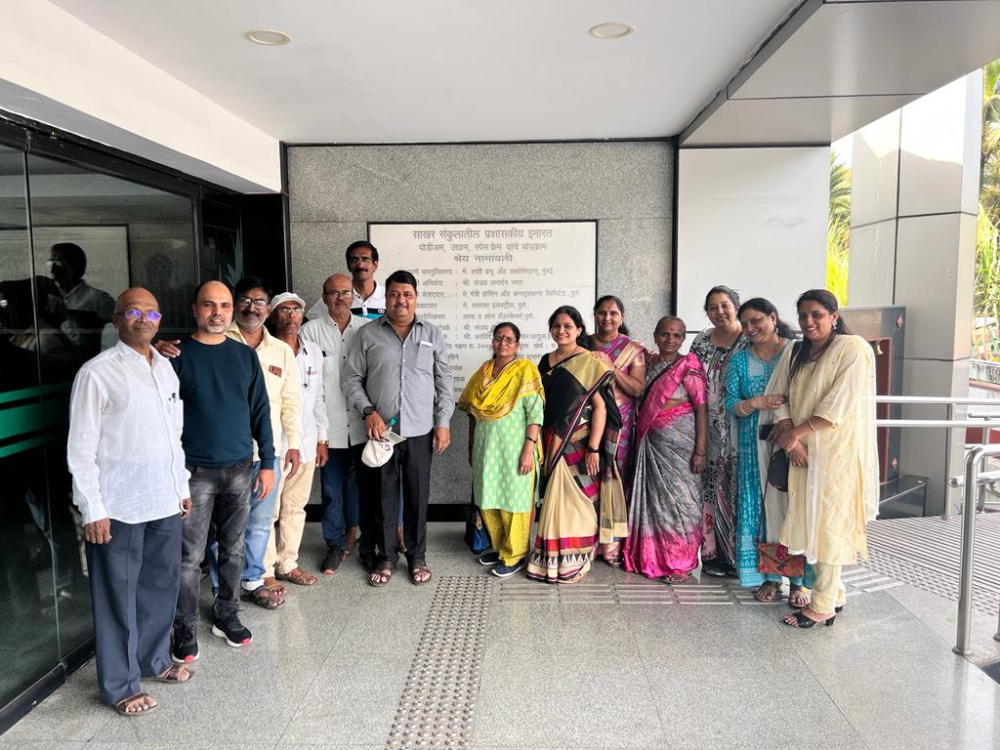

Initially, our society began the process of regular conveyance deed. However, due to the builder's unresponsiveness, the procedure could not move forward. After assessing the situation and consulting experts, we took the route of Deemed Conveyance — a legal path that does not require the builder's active participation.
This journey was not easy and took almost three years of relentless effort. The leadership and dedication of our Chairman Mr. Manik Lawande and Vice Chairman Mr. Santosh Bodke played a pivotal role in pushing this forward.
Multiple rounds of document submissions, hearings, and verifications were involved. The society members stood together with trust in the process, and eventually, we succeeded in securing our Deemed Conveyance certificate.
You can check out the official documents and certificates related to this process on our Documents Page.
This is a huge milestone for our society and sets an example for others who are facing similar hurdles. We hope our journey inspires and guides others towards legal ownership of their homes.